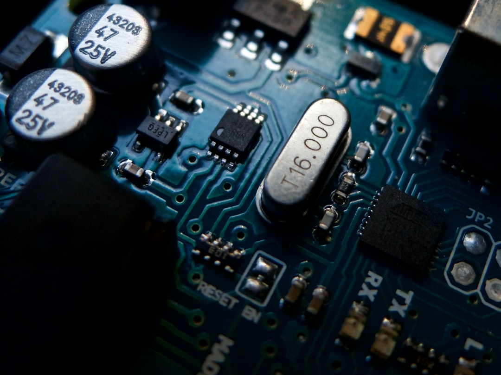

미중 AI·반도체 합의 불발 장기화…韓, '플랫폼 중립' 더 이상 못 버틴다

미중 정상회담에서 반도체·AI 분야는 공식 의제에도 오르지 못하고 노딜로 마무리됐다. 엔비디아의 H20 칩은 2024년 4월 미국 상무부의 추가 규제로 중국 수출이 사실상 차단된 상태이며, 중국 내 공백은 화웨이 Ascend 910C 등 국산 AI 칩이 메우는 구조다. 화웨이는 2025년 기준 중국 AI 칩 시장 점유율을 30% 이상으로 끌어올린 것으로 추정된다.
트럼프 행정부의 AI 반도체 전 세계 수출 허가 의무화(허가제) 추진은 한국을 직접 압박한다. 현재 미국은 한국을 '검증된 최종사용자(VEU)' 우대국으로 분류하고 있으나, 제도 변경 시 삼성전자·SK하이닉스의 HBM 수출 절차가 복잡해질 수 있다. HBM3E 기준 SK하이닉스의 엔비디아향 공급 비중은 약 70%로 미국 AI 반도체 정책 변화에 직접 연동된다.
서울대 국가미래전략원 포럼에서 발표된 분석에 따르면, 한국이 미중 기술패권 경쟁에서 현재의 '플랫폼 중립 전략'을 유지할 수 있는 시간은 2026년이 마지노선으로 설정됐다. 2026년 이후 미국의 반도체 수출 통제 체계가 동맹 기반 다자 규제(웨이퍼 협약 등)로 전환될 경우, 한국은 명시적 입장을 표명해야 하는 구조에 놓인다.
데일리연합 분석에 따르면 2026년 첨단 산업 패권 향방의 핵심 변수는 AI 칩 설계 생태계와 파운드리 공정 기술 두 가지로 압축된다. 삼성전자의 2nm GAA 공정 수율 안정화, TSMC의 애리조나 팹 가동, 그리고 인텔의 18A 공정 경쟁력이 2026년 상반기에 교차하는 시점이 한국 파운드리 포지셔닝의 분기점이 된다.
미중 합의 불발은 단순한 외교 실패가 아니라, 기술 블록화가 협상 가능한 수준을 넘어섰다는 신호다. 엔비디아가 중국에 못 팔고, 화웨이가 그 자리를 채우는 구조는 이제 되돌리기 어려운 경로에 진입했다. 한국이 '양쪽 다 공급한다'는 전략을 유지할 수 있는 기술적·정치적 여건이 점점 좁아지고 있다.
HBM 소재 공급망 시각에서 보면, 미국 AI 칩 허가제가 현실화될 경우 한국의 HBM 수출은 미국의 규제 심사를 받는 구조가 된다. 이는 SK하이닉스·삼성전자의 중국 고객(바이두·알리바바 클라우드 등)에 대한 HBM 공급이 미국 승인을 거쳐야 한다는 의미다. 소재 공급자 입장에서는 HBM 생산에 쓰이는 고순도 텅스텐·탄탈럼·루테늄 같은 소재의 수요 경로가 미국 정책에 연동되는 구조가 된다.
화웨이와 중국 팹리스 생태계는 엔비디아 공백이 길어질수록 수혜를 본다. Ascend 910C의 성능이 H100의 60~70% 수준이라도, 중국 내 수요처가 대안이 없는 상황에서 화웨이의 시장 지배력은 2025~2026년에 걸쳐 빠르게 강화된다. 중국 내 AI 칩 시장 규모는 2025년 기준 약 200억 달러로 추정된다.
TSMC는 기술패권 전쟁의 반사 수혜자다. 미국이 삼성 파운드리 대신 TSMC 애리조나를 '신뢰할 수 있는 공급처'로 명시적으로 강화하는 방향으로 정책이 기울고 있으며, 애리조나 N3 팹의 연간 생산 능력은 2026년 웨이퍼 기준 월 2만 장 수준으로 확대될 예정이다.
삼성전자 파운드리는 미중 기술 블록화에서 가장 복잡한 위치에 있다. 미국 고객과 중국 고객을 동시에 보유한 구조에서 어느 한쪽 규제가 강화될 때마다 양쪽에서 압박을 받는다. 2024년 삼성 파운드리의 가동률이 50% 후반대로 하락한 것은 단순 수요 문제가 아니라 이 구조적 리스크의 반영이다.
한국 팹리스 기업들은 AI 칩 허가제가 현실화될 경우 설계 검증·수출 허가 절차에서 6~12개월의 추가 리드타임을 감수해야 할 수 있다. 국내 AI 칩 설계 기업 중 엔비디아 GPU 대체를 목표로 하는 스타트업들은 미국 EDA 툴 라이선스와 TSMC 파운드리 접근 모두 미국 정책에 연동돼 있어, 기술패권 전쟁의 2차 피해자가 될 수 있다.
한국 산업 전략가와 기업 구매담당자에게 2026년은 '중립 유지'가 가능한 마지막 해다. 지금 해야 할 일은 자사 공급망에서 미국 수출 규제 대상 기술이 어느 단계에 얼마나 연동돼 있는지를 정확하게 파악하는 것이다. 미국 EAR(수출관리규정) 적용 범위가 소재·부품 단계까지 확대되는 추세이므로, 소재 조달 계약서에 '규제 변경 시 면책 조항'을 표준 문구로 삽입하는 것이 2025년 내 실행해야 할 최소 조치다.
HBM 소재(텅스텐 CMP 슬러리, 탄탈럼 타깃, 루테늄 전구체) 공급사들은 미국향 HBM 수요와 중국향 HBM 수요가 분리되는 시나리오를 사전에 설계해야 한다. SK하이닉스·삼성이 중국 고객 물량을 줄일 경우, 해당 소재 수요도 단기적으로 감소할 수 있다. 이는 공급사 입장에서 단기 리스크이므로, 북미·유럽 HBM 수요처로의 다변화 계약을 지금부터 병행해야 한다.
실제 조달 현장에서는 — 미중 합의가 안 됐다는 뉴스가 나올 때마다 기업들은 '일단 지켜보자'는 모드로 간다. 그게 가장 비싼 선택이다. 불확실성이 유지되는 구간이야말로 공급처 계약 협상력이 수요 기업 쪽에 있는 시간이다. 규제가 확정된 후에는 협상력이 공급자 쪽으로 넘어간다. 지금이 소재 조달 구조를 바꿀 수 있는 마지막 유리한 구간임을 잊지 말아야 한다.
이 포스팅은 쿠팡 파트너스 활동의 일환으로 수수료를 제공받습니다.